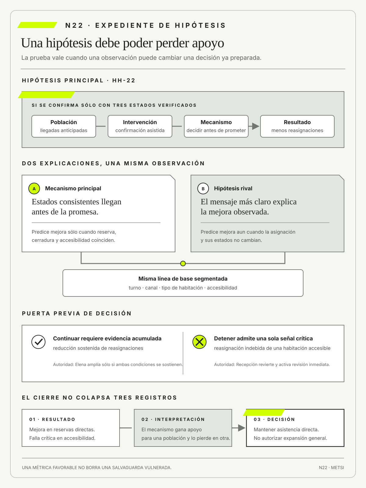

Karl Popper
The Logic of Scientific DiscoveryHutchinson · 1959
Formuló la refutación como criterio de crítica del conocimiento.

Una mejora agregada no valida al mismo tiempo causalidad, legitimidad y conveniencia.
Iniciativas como hipótesis que pueden refutarse
Ruta priorizada: 1 h 20 min a 1 h 40 min. Núcleo de lectura: 60 a 75 min; preparación: 20 a 25 min. Las extensiones agregan 30 a 45 min y profundizan el recorrido.

Nota. SIN NUM. identifica aparatos de orientación y referencia.
Seis referentes y las obras principales utilizadas para construir N22.
Formuló la refutación como criterio de crítica del conocimiento.

Formalizó modelos causales que distinguen observación, intervención y atribución.

Popularizó ciclos de construir, medir y aprender para reducir incertidumbre.

Vinculó descubrimiento de clientes con hipótesis sobre problemas, propuestas y modelos que deben contrastarse.

Mostró que los modelos son aproximaciones cuya utilidad depende de propósito, supuestos y contraste.

Lideró un marco para gobernar, medir y gestionar riesgos de inteligencia artificial.
N22 no resume estas fuentes ni las convierte en receta. Las pone en tensión para construir juicio profesional.
¿Cómo dejar de defender una iniciativa por lo que promete y empezar a exigirle resultados que puedan cambiar la decisión?

Una iniciativa aprende cuando explicita mecanismo, rival, población, línea de base, salvaguardas, umbral y decisión.
Una empresa de distribución propone predecir abandonos de clientes y ofrecer descuentos automáticos. La presentación promete retención, eficiencia comercial y mejor experiencia. Cada área aporta una razón distinta y todas quedan reunidas bajo una iniciativa llamada fidelización inteligente. El piloto reduce bajas en un segmento y aumenta descuentos concedidos a quienes habrían continuado sin incentivo.
Marketing celebra retención, Finanzas observa erosión de margen, Atención registra reclamos por trato desigual y Tecnología muestra disponibilidad. La iniciativa sobrevive porque cualquier resultado puede narrarse como éxito o aprendizaje. Si mejora una métrica, se atribuye al modelo; si aparece daño, se solicita más datos; si nada cambia, se culpa a la adopción. La interpretación se adapta después de conocer el resultado.
La dificultad no nace de falta de información. Existen compras, contactos, ofertas, cancelaciones y reclamos. El problema es que esos registros pueden ordenarse retrospectivamente para sostener casi cualquier explicación. Sin una hipótesis previa, la abundancia de datos aumenta posibilidades narrativas y no necesariamente conocimiento.
Una hipótesis profesional dice a quién alcanza la iniciativa, qué intervención se hará, por qué podría funcionar, qué resultado se espera y cuándo se observará. También fija protecciones, evidencia para detener y explicaciones rivales. La retención puede cambiar por el descuento, una campaña simultánea, la estación del año o la selección de clientes que ya tenían mayor probabilidad de continuar. Cada explicación exige una comparación distinta.
El equipo separa tres hipótesis. La primera sostiene que una oferta oportuna modifica la decisión de clientes con riesgo real. La segunda afirma que una explicación más clara reduce cancelaciones evitables. La tercera plantea que ciertos abandonos expresan problemas del servicio y no deben ocultarse con incentivos. La automatización deja de ser la solución a validar y pasa a ser una opción entre varias.
La prueba limita exposición y define antes qué resultado debilitará cada hipótesis. Conserva una línea de base, desagrega poblaciones y registra costo, margen, reclamo y reparación. Una mejora media no compensa daño concentrado ni vuelve aceptable una discriminación. La autoridad de detención no queda en manos exclusivas de quien patrocina la iniciativa.
La refutabilidad disciplina también el poder. Quien controla presupuesto y narrativa suele elegir indicadores; quienes absorben consecuencias aparecen como promedios. Separar juicios descriptivos, causales, normativos y decisionales evita que una cifra resuelva preguntas que no puede responder. El hecho de que algo ocurrió no prueba por qué, si era admisible ni qué compromiso debe continuar.
Antes del piloto quedan escritos los umbrales de ampliación, revisión y detención. También se registra qué observación sería ambigua y qué nueva evidencia haría falta. Esa previsión no elimina la interpretación, pero impide que cada resultado adopte el significado más conveniente después de ocurrir. La iniciativa queda expuesta a perder recursos, cambiar mecanismo o ceder lugar a una alternativa más simple.
Refutar no significa fracasar. Puede evitar inversión, daño o dependencia cuando el mecanismo no se sostiene. N22 recibe de N21 objetos y responsabilidades y convierte iniciativas en afirmaciones discutibles, comparaciones practicables y decisiones con umbrales previos. La organización aprende algo decisivo sólo si estaba dispuesta a cambiar de curso antes de ver el resultado.
HH-21 distinguió proyecto, producto, servicio y plataforma. En HH-22, Camila Duarte sostiene que confirmar antes reducirá abandono de reservas; Lucía Ferreyra teme que sólo adelante conflictos al mostrador y Mariela Benítez advierte que el promedio oculta habitaciones accesibles. La iniciativa se formula como hipótesis y deja de justificarse por intención.

La hipótesis principal afirma que confirmar cuando asignación, cerradura y accesibilidad están verificadas reducirá cancelaciones sin aumentar reasignaciones ni compensaciones. La baseline separa canal, tipo de habitación y franja horaria. La hipótesis rival propone que la mejora proviene de mensajes más claros y no de anticipar la confirmación. El mecanismo esperado y el rival requieren señales distintas.
Elena Acosta autoriza exposición limitada durante cuatro semanas. El umbral de continuación combina cancelaciones, espera, reasignaciones y daño por población; una sola reasignación indebida de una habitación accesible activa revisión inmediata. Federico Müller instrumenta eventos, mientras Ricardo Sosa controla que la prueba pueda detenerse y que ninguna persona pierda una protección vigente.
La primera semana del piloto produce una señal ambigua. El tiempo medio disminuye, pero el percentil noventa permanece igual. Las reservas directas mejoran y las de canal externo no cambian. Dos personas reciben una confirmación que luego debe corregirse porque el estado de accesibilidad no estaba sincronizado. El mecanismo principal gana apoyo para una población y lo pierde para otra. El equipo evita consolidar ambas dentro de un promedio y conserva la heterogeneidad como parte del resultado.
Lucía reconstruye los dos episodios adversos. En el primero, el motor disponía del dato correcto, pero la regla lo interpretaba como preferencia. En el segundo, la regla era adecuada y el dato llegó después de la confirmación. Las fallas se parecen desde la perspectiva del huésped, aunque exigen decisiones diferentes. La evidencia del mecanismo permite suspender la automatización para canales externos, mantener asistencia en reservas directas y priorizar el contrato temporal antes de ampliar.
Camila propone extender el piloto para obtener una muestra mayor. Mariela objeta que aumentar exposición no corrige un mecanismo que perdió apoyo para una población protegida y cuya salvaguarda ya fue vulnerada. Elena resuelve mantener cuatro semanas sólo donde las condiciones declaradas se cumplen. La decisión muestra que tamaño de muestra, validez y legitimidad no son sinónimos. Más observaciones pueden reducir incertidumbre estadística y aumentar un daño que no debería producirse.
El expediente final no declara que la automatización funciona o no funciona en general. Afirma que una regla asistida reduce parte de la espera en reservas directas cuando los tres estados llegan antes de la decisión, y que la evidencia disponible no autoriza confirmación automática para canales externos ni habitaciones accesibles. Define qué se mantiene, qué se rediseña y qué nueva prueba sería necesaria. Esa conclusión limitada tiene más valor profesional que una declaración total sin condiciones.
Al concluir las cuatro semanas, HH-22 conserva resultado, interpretación y decisión como registros separados. La decisión mantiene asistencia en reservas directas bajo las condiciones probadas, suspende la automatización para los grupos excluidos y no autoriza una ampliación general. Como cierre, HH-23 recibe una hipótesis delimitada y la decisión del piloto ya concluido para convertirlas en una capacidad de punta a punta; la primera ejecución de ese slice pertenece a una etapa posterior y no prolonga retrospectivamente la prueba de cuatro semanas.
Una iniciativa sólo permite aprender si, antes de exponer a más personas, declara cómo espera funcionar, qué explicación rival existe, a quién alcanza, desde qué situación parte y qué resultado obliga a continuar, revisar o detener. Una mejora promedio no demuestra por sí sola la causa, la legitimidad ni la conveniencia. El trabajo profesional consiste en separar resultado, interpretación y decisión para poder cambiar o retirar la apuesta aunque una medida favorable invite a ampliarla.
La tesis se vuelve operativa al explicitar cómo entregables y cambios de práctica producirían un resultado, qué supuestos median y qué observación podría refutar la apuesta. Esa secuencia obliga a declarar qué cambia, qué permanece abierto y qué evidencia podría modificar la decisión. El rigor no proviene de agregar términos, sino de hacer reconstruible el paso entre una observación, una explicación y una acción.
Un ejemplo sencillo permite verlo: un portal prueba entrega; resolver sin derivación prueba capacidad; comparar llamadas y problemas pendientes ayuda a evaluar el efecto esperado. El caso muestra por qué una misma señal admite explicaciones e intervenciones diferentes. Antes de ampliar alcance conviene precisar población, condición de éxito y fuente de evidencia.
El límite también importa: interpretar cualquier resultado como confirmación o exigir un experimento aleatorio incluso cuando otra evidencia proporcional alcanza. Ese contraejemplo evita convertir una idea útil en receta universal. Una decisión puede ser provisional, pero debe decir qué protege ahora y cuándo volverá a examinarse.
En Hotel Horizonte, automatizar confirmaciones supone mejorar la llegada sin aumentar promesas incumplibles; velocidad con más compensaciones debilita la hipótesis. El caso longitudinal obliga a sostener la misma promesa mientras cambian el modelo y la evidencia; así puede verse qué aprendió realmente el equipo.
La consecuencia profesional es gobernar inversión por evidencia y no por inercia; N23 construirá slices completos que produzcan aprendizaje. La tesis no cierra la discusión: fija un criterio común para que el encuentro pueda comparar argumentos, producir evidencia y decidir sin ocultar incertidumbre.
Una iniciativa sólo aprende cuando una observación puede debilitar su mecanismo, activar una salvaguarda y modificar una decisión preparada antes de aumentar exposición.

N21 entrega una arquitectura que distingue proyecto, producto, servicio y plataforma, con sus horizontes, responsables y evidencias. N22 toma las iniciativas asociadas y explicita para cada una el mecanismo esperado, la señal que podría refutarlo y la decisión que seguirá al resultado.
N23 recibirá apuestas explícitas y decidirá cómo cortarlas en capacidades que produzcan valor y aprendizaje. N22 no diseña todavía la secuencia de entrega.
Las fuentes responden cuatro preguntas: cómo someter una afirmación a crítica, cómo distinguir causa de coincidencia, cómo aprender con una iniciativa y cómo limitar el daño. Popper aporta la posibilidad de refutar. Campbell, Shadish y Pearl ayudan a interpretar resultados. Ries y Blank conectan aprendizaje con decisiones. Box recuerda que todo modelo es una representación limitada. OCDE, NIST, la Unión Europea y W3C fijan protecciones y responsabilidades.
Popper, K. fundamenta crítica y refutación de afirmaciones.
Campbell, D. T. y Stanley, J. C. aportan criterios de inferencia y validez en contextos reales.
Ries, E. vincula hipótesis, exposición y aprendizaje decisional.
Blank, S. y Dorf, B. vinculan descubrimiento de problemas y clientes con pruebas que pueden cambiar una propuesta y su modelo de sostenimiento.
Box, G. E. P. y Draper, N. R. aportan una disciplina de modelado en la que la utilidad depende de propósito, supuestos y contraste con evidencia, no de confundir el modelo con el mundo.
Shadish, W. R., Cook, T. D. y Campbell, D. T. aportan criterios de inferencia y validez en contextos reales.
OCDE sitúa acceso a datos dentro de gobierno y responsabilidad.
Tabassi, E. lidera el AI Risk Management Framework 1.0 y vincula la gestión del riesgo de inteligencia artificial con gobierno, mapeo, medición y tratamiento durante todo el ciclo.
NIST AI RMF 1.0 organiza gobierno, mapeo, medición y tratamiento del riesgo de inteligencia artificial.
Autio, C. et al. especifican en el perfil NIST AI 600-1 riesgos y acciones para inteligencia artificial generativa sin reemplazar el marco general.
La Unión Europea limita qué usos de inteligencia artificial pueden exponerse a prueba y qué obligaciones no admiten suspensión experimental.
Pearl, J. explica por qué una asociación observada no alcanza para atribuir el outcome a la intervención y cómo explicitar supuestos causales.
W3C aporta principios éticos para orientar diseño responsable y control de daño. Ethical Web Principles es una declaración no normativa y, por lo tanto, no se usa como obligación técnica ni jurídica.
Estas tradiciones resuelven preguntas diferentes. La refutación obliga a preguntar qué observación debilitaría una afirmación. La inferencia causal examina si el cambio puede atribuirse a la intervención o a otra variación. El descubrimiento de producto conecta el aprendizaje con una decisión de inversión. Los marcos de riesgo y las normas delimitan qué no puede ponerse a prueba del mismo modo. N22 las integra sin afirmar que un buen diseño experimental resuelva por sí solo una decisión legítima.
La posición de Popper no se traslada mecánicamente desde la ciencia a una iniciativa organizacional. Una teoría científica busca resistir crítica dentro de una comunidad y un programa de investigación. Una iniciativa debe decidir bajo plazos, recursos y obligaciones. La refutabilidad práctica es, por eso, más modesta: exige que exista al menos un resultado posible capaz de modificar el compromiso y que esa modificación pueda ejecutarse.
Pearl aporta otra precaución. Observar que dos variables cambian juntas no basta para afirmar que una causó la otra. La automatización puede coincidir con menor espera porque cambió la mezcla de reservas, aumentó la dotación o terminó un pico. Explicitar el diagrama causal permite decidir qué variables medir, qué comparaciones sostienen el argumento y dónde quedan supuestos no verificables.
Los marcos de NIST y la regulación europea agregan gobierno al análisis (Tabassi, 2023; Autio et al., 2024; Unión Europea, 2024). En sistemas con inteligencia artificial, medir exactitud no alcanza. Deben examinarse finalidad, población, transparencia, supervisión, seguridad y posibilidad de impugnación. Algunas aplicaciones enfrentan obligaciones previas a cualquier experimento. El lenguaje de innovación no suspende esas condiciones.
El primer movimiento traduce una expresión amplia, como mejorar la experiencia o automatizar la asignación, en una proposición que conserva sus condiciones. La traducción no busca reducir un problema complejo a una fórmula. Busca impedir que intervención, resultado y explicación se intercambien durante la evaluación. Cada término debe permanecer identificable para que un resultado inesperado permita aprender algo más preciso que funcionó o fracasó.
La formulación comienza por el resultado y retrocede hacia el mecanismo. Pregunta qué condición relevante debería cambiar, para quién y dentro de qué horizonte. Luego identifica qué acción concreta alteraría el sistema y por qué esa acción podría producir el cambio. Finalmente declara las condiciones que deben permanecer verdaderas. Una hipótesis que omite esas condiciones suele generalizar un hallazgo local más allá de lo que la evidencia permite.
En sistemas sociotécnicos, el mecanismo casi siempre incluye trabajo humano. Una alerta no reduce demoras por existir. Debe llegar a alguien que pueda interpretarla y actuar antes de que se cierre la oportunidad. Una recomendación no mejora una decisión si la organización sanciona apartarse de ella. Hacer visible ese trabajo evita atribuir a la herramienta un efecto producido por una combinación de personas, reglas e infraestructura.
La refutabilidad requiere una alternativa operativa. No basta con escribir que la iniciativa se revisará si no funciona. Debe existir una acción disponible, como limitar población, cambiar el mecanismo, volver al circuito anterior o retirar inversión. Si los contratos, la comunicación o la arquitectura hacen imposible retroceder, el compromiso ya fue tomado antes de la prueba.
«La espera bajó», dijo Camila. «No para las habitaciones accesibles», advirtió Mariela. Federico preguntó: «¿La mejora vino de la regla o de que hubo menos reservas?». Elena respondió: «Si no podemos distinguirlo, todavía no sabemos qué ampliar». Una hipótesis útil convierte ese desacuerdo en evidencia por buscar y en una decisión que puede cambiar.
Una hipótesis de iniciativa afirma que una intervención producirá un outcome mediante un mecanismo bajo condiciones explícitas. Puede resultar falsa sin que el equipo cambie después su significado.
La formulación incluye población, horizonte y decisión futura. Distingue el trabajo a realizar del efecto que justificaría sostenerlo y nombra qué evidencia obligaría a revisar.
En Hotel Horizonte, usar el estado de cerradura sólo reducirá reasignaciones si la información llega antes de prometer la habitación.
La hipótesis se redacta como una relación condicional y no como una predicción absoluta. Si Recepción dispone antes de confirmar de estados consistentes de reserva, limpieza, accesibilidad y cerradura, entonces disminuirán las reasignaciones evitables en llegadas anticipadas, porque la decisión se tomará sobre una habitación materialmente utilizable. Esta forma permite observar cada eslabón y descubrir si la falla está en disponibilidad, consistencia, oportunidad, interpretación o autoridad.
Una afirmación demasiado amplia, como la inteligencia artificial reducirá la espera, carece de una intervención identificable y mezcla poblaciones. Una afirmación demasiado estrecha, como el tiempo de respuesta del modelo bajará cincuenta milisegundos, puede ser medible y no justificar ninguna decisión de servicio. La calidad se encuentra en conectar una intervención controlable con una consecuencia relevante.
Un resultado observable, denominado outcome en la bibliografía de producto, es un cambio relevante en conducta, capacidad o condición de actores concretos. No equivale a desplegar, adoptar ni completar una actividad.
Debe indicar población, dirección y horizonte y considerar efectos desplazados hacia otras personas. Una mejora media no alcanza si agrava una excepción crítica.
Reducir espera sin aumentar exclusión constituye un outcome; instalar el motor de reglas es un output.
El resultado debe distinguir cambio de estado y experiencia percibida. La persona puede esperar menos y sentirse menos capaz de comprender o impugnar una decisión. Ambas consecuencias importan si la intervención automatiza una regla. Por eso HH-22 combina medidas de tiempo con correcciones, explicaciones y distribución por población.
También conviene separar resultados tempranos y finales. Una confirmación más rápida es una señal temprana. Una llegada sin reasignación ni compensación se aproxima al resultado del servicio. Una mejora comercial sostenida puede aparecer después. La cadena evita que una señal conveniente sustituya al cambio que justificaba la iniciativa.
El mecanismo explica cómo la intervención podría producir el outcome. Describe condiciones y pasos intermedios que pueden observarse antes del resultado final.
Formularlo permite elegir señales tempranas y distinguir una hipótesis rival. También muestra qué parte de la intervención convendría conservar si el outcome no cambia.
Más información sólo ayuda si llega a quien decide, en un momento en que todavía puede actuar y con autoridad suficiente.
Un mecanismo se fortalece cuando produce predicciones intermedias diferenciadas. Si el problema es información tardía, debería observarse que los eventos llegan después de la promesa. Si es interpretación semántica, los estados llegarán a tiempo y significarán cosas diferentes. Si es autoridad, la persona conocerá el conflicto y no podrá modificar la asignación. Esas huellas permiten decidir sin esperar únicamente un resultado agregado.
El mecanismo no debe confundirse con una narración plausible escrita después. Se documenta antes y se revisa cuando aparece evidencia. La revisión no borra la formulación anterior, porque la diferencia entre ambas constituye aprendizaje sobre el sistema.
La refutabilidad práctica es la posibilidad real de observar evidencia que obligue a modificar o abandonar la apuesta. No exige un laboratorio perfecto, pero sí una decisión que pueda perder apoyo.
El umbral se define antes y se vincula con una autoridad. Obligaciones y daños irreversibles limitan qué puede exponerse a prueba.
Si aumentan reasignaciones de habitaciones accesibles, el piloto se detiene aunque mejore el promedio general.
La posibilidad de detener depende de autoridad y arquitectura. Una salvaguarda sin una persona autorizada es una advertencia; una persona autorizada sin un mecanismo de reversión puede registrar daño y no evitarlo. HH-22 vincula la señal con una acción ejecutable y prueba esa ruta antes de exponer casos reales.
La refutabilidad no obliga a abandonar toda la iniciativa ante la primera contradicción. Puede debilitar un mecanismo para una población, sostenerlo para otra o revelar que la intervención necesita una condición adicional. Lo que no admite es transformar cada contradicción en una confirmación de la versión original.
Conviene separar cuatro resultados inferenciales. Una observación puede refutar una afirmación determinista, como “ninguna confirmación accesible pierde su restricción”, mediante un solo contraejemplo válido. Puede debilitar una afirmación probabilística sin refutarla, si la frecuencia observada difiere pero la muestra todavía admite explicaciones rivales. Puede resultar inconclusa por falta de datos comparables. También puede vulnerar una salvaguarda y obligar a detener aunque la hipótesis causal conserve apoyo parcial.
Popper (1959) fundamenta la exposición a crítica; Campbell y Stanley (1963) y Shadish, Cook y Campbell (2002) permiten discutir amenazas a la inferencia en diseños aplicados. N22 no convierte esas tradiciones en una regla automática de decisión.
La ficha debe nombrar cuál de esos estados se produjo. “Refutado” se reserva para una afirmación incompatible con evidencia válida dentro de su alcance. “Perdió apoyo” indica que el mecanismo resulta menos plausible. “No autorizado para ampliar” expresa una decisión de gobierno que puede surgir aun sin conclusión causal definitiva. Esta precisión evita que la severidad de un daño se presente como significación estadística o que una muestra grande se use para neutralizar un límite normativo.
El segundo movimiento reconoce que un resultado no habla por sí solo. Toda comparación selecciona una población, una ventana temporal, una unidad y una forma de agregar. Esas decisiones pueden fortalecer una inferencia o construir una apariencia de mejora. Diseñar evidencia consiste en anticipar qué otras causas producirían la misma señal y qué observación ayudaría a distinguirlas.


La evidencia no se reduce a una base cuantitativa. Un conjunto pequeño de episodios reconstruidos puede revelar un mecanismo que un promedio oculta. Una entrevista puede mostrar que una alerta no se comprende. Un registro técnico puede ubicar una demora. Un experimento controlado puede estimar una diferencia promedio. Cada fuente sostiene inferencias distintas y posee amenazas propias. La triangulación vale cuando las fuentes se contradicen de manera productiva, no cuando se acumulan como decoración.
La comparación más rigurosa no siempre es posible ni legítima. Puede no existir una población equivalente, la muestra puede ser pequeña o una obligación puede impedir negar una protección. En esos casos se diseña una inferencia más limitada y se declara qué no puede concluirse. La honestidad sobre el límite es parte del resultado profesional.
El diseño previo protege además contra el sesgo de selección. Si sólo se observan casos que completaron el circuito, desaparecen abandonos y reparaciones. Si se elige el período después de ver la curva, la estacionalidad puede fabricar una mejora. HH-22 fija reglas de inclusión y conserva datos faltantes como señal, en lugar de tratarlos automáticamente como ruido.
La línea de base, denominada baseline en parte de la bibliografía, describe el estado de comparación previo con período, población, variabilidad y limitaciones. Un promedio aislado no permite atribuir ni reconocer estacionalidad.
Se construye con episodios comparables y calidad de datos conocida. Si una definición o fuente cambia durante la intervención, se conserva el quiebre en lugar de fabricar continuidad.
HH-22 mide ingreso por turno, canal y necesidad accesible antes del piloto para distinguir mejora de mezcla poblacional.
La línea de base no representa una normalidad eterna. Describe un período y sus condiciones, incluidos picos, cambios de personal y problemas de registro. El objetivo no es congelar el sistema, sino ofrecer una referencia cuya comparabilidad pueda discutirse.
El hotel conserva tanto la distribución como episodios extremos. Si el promedio mejora porque desaparecen del registro las llegadas más complejas, la línea de base deja visible el cambio de cobertura. También marca qué indicadores no existían antes y evita presentar una serie construida retrospectivamente como si hubiera guiado la decisión original.
La versión de HH-22 identifica como línea de base las cuatro semanas anteriores a la exposición y mantiene separados turno, canal, tipo de habitación y solicitud de accesibilidad. Conserva para cada segmento cantidad de reservas elegibles, datos faltantes, cancelaciones, espera, reasignaciones y compensaciones. El denominador de cada proporción es la población elegible del mismo segmento, no sólo los casos que completaron el ingreso.
Cuando una fuente cambia su definición, la serie se corta y la comparación se declara limitada. Esta especificación permite reconstruir qué observación provino de qué población sin fabricar cifras ausentes.
Una hipótesis rival ofrece otra explicación capaz de producir las mismas señales. Su función no es multiplicar objeciones, sino diseñar una observación que discrimine mecanismos plausibles.
Se prioriza según probabilidad y consecuencia. Gana apoyo cuando anticipa casos que la explicación principal no puede resolver.
La demora del hotel puede provenir de falta de autoridad y no de falta de información; ambas hipótesis exigen intervenciones distintas.
Una rival útil debe ser plausible y discriminable. Afirmar que todo puede deberse al azar no orienta ninguna observación. En cambio, proponer que el efecto proviene de mensajes más claros predice mejora incluso cuando no cambia la asignación. Proponer que proviene de mayor dotación predice una diferencia por turno. Estas consecuencias permiten diseñar comparaciones.
La rival también limita el entusiasmo tecnológico. Una herramienta puede correlacionarse con mejor desempeño porque recibe los casos más simples o porque sus usuarios cuentan con apoyo especial. Incluir selección y capacidad institucional como explicaciones alternativas evita atribuir al artefacto una ventaja que el despliegue general no conservaría.
Una métrica operacionaliza una parte del resultado mediante unidad, población, ventana y agregación. Crea visibilidad y también ceguera, por lo que no es el outcome ni una verdad neutral.
La selección considera validez, sensibilidad, latencia y posibilidad de manipulación. Se combinan señales de mecanismo, outcome y protección para no optimizar una cifra aislada.
El tiempo promedio se acompaña con percentiles, excepciones y reparación, y conserva el denominador que permite reconstruirlo.
Toda métrica crea incentivos. Si el equipo es premiado por tiempo hasta confirmación, puede confirmar antes y trasladar errores al mostrador. Si se mide sólo cancelación, puede retener reservas mediante condiciones que empeoran la experiencia. El expediente identifica conductas que la medida podría inducir y agrega una señal de protección.
La incertidumbre de la medida debe conservarse. Una diferencia pequeña en una muestra limitada no autoriza una promesa precisa. Intervalos, sensibilidad a supuestos y calidad de datos ayudan a expresar cuánto depende la conclusión de decisiones analíticas. Box recuerda que la utilidad de un modelo no elimina su carácter aproximado.
Un umbral define qué evidencia habilita continuar, adaptar, ampliar o detener. No es una meta aspiracional ni un semáforo sin autoridad.
Se fija antes de mirar el resultado e incluye reglas para datos incompletos y señales contradictorias. Cambiarlo crea una nueva decisión que debe quedar registrada.
HH-22 exige una reducción sostenida de reasignaciones y ninguna pérdida crítica de accesibilidad antes de ampliar población.
Los umbrales pueden ser asimétricos. Para ampliar una automatización puede requerirse evidencia acumulada de beneficio, mientras una sola falla grave puede detenerla. Esa asimetría refleja consecuencias, no inconsistencia estadística. El expediente explica por qué una salvaguarda prevalece sobre la métrica principal.
Cuando los resultados quedan entre umbrales, la decisión no debe inventar certeza. Puede extender la observación sin aumentar exposición, modificar la medición o mantener el circuito previo. La zona de indeterminación se diseña antes para que la presión por mostrar avance no la convierta en aprobación automática.
El tercer movimiento convierte la evaluación en gobierno. Muchas organizaciones pueden producir informes rigurosos y carecen de una ruta para cambiar la iniciativa financiada. El patrocinio interpreta, el equipo recomienda y nadie posee autoridad para detener. N22 exige que cada salida posible tenga un responsable, una acción y una forma de atender casos ya expuestos.
Continuar, adaptar, ampliar y retirar no son cuatro etiquetas de semáforo. Continuar conserva alcance y mecanismo porque la evidencia sigue siendo compatible. Adaptar cambia una parte y formula una nueva hipótesis. Ampliar aumenta población o compromiso y necesita evidencia proporcional al riesgo adicional. Retirar detiene exposición e inversión mientras conserva obligaciones y aprendizaje. Cada decisión produce un nuevo estado del sistema.
La salvaguarda cumple dos funciones. Protege durante la prueba y produce evidencia sobre condiciones de operación. La cantidad de intervenciones humanas, los motivos de reversión y el tiempo hasta reparar muestran si el mecanismo puede sostenerse. Considerar esas intervenciones como fallas que deben ocultarse elimina información decisiva para la expansión.
En 2026, esta operación resulta central para sistemas con componentes de inteligencia artificial. Un proveedor puede actualizar un modelo, una distribución de datos puede cambiar y una nueva forma de uso puede alterar riesgos. La decisión no se cierra en la validación inicial. Se necesitan umbrales de monitoreo, autoridad de suspensión y criterios de revalidación durante todo el ciclo.
Una salvaguarda limita exposición y preserva reparación durante el aprendizaje. Puede tener prioridad sobre la métrica principal y detener una iniciativa que parece exitosa.
Incluye población, señal, responsable, mecanismo de reversión y respuesta para quienes sufrieron el daño. No debe confundirse con monitoreo sin capacidad de actuar.
Recepción puede anular una asignación automática y volver al circuito anterior cuando la promesa no puede sostenerse.
Una salvaguarda efectiva debe probarse antes del incidente. El botón de reversión puede existir y fallar por permisos, datos incompatibles o desconocimiento del turno. HH-22 ejecuta un simulacro, mide el tiempo de recuperación y confirma que la decisión queda registrada.
La protección incluye reparación a la persona afectada. Volver el sistema al estado anterior no corrige una promesa ya incumplida. El expediente identifica comunicación, alternativa, compensación y seguimiento, de modo que el costo del aprendizaje no quede externalizado.
Un piloto es una intervención deliberadamente limitada para aprender sobre operación y outcome en condiciones reales. Un experimento natural aprovecha variación externa sin asignarla, pero también requiere una comparación defendible.
Población, duración, baseline, exposición y decisión posterior se definen antes. El nombre piloto no legitima un lanzamiento general ni suspende obligaciones.
En el hotel se comparan dos turnos con demanda semejante y supervisión disponible, sin privar a ninguno de una protección conocida.
El piloto se diseña para representar la operación que se pretende escalar. Si sólo funciona con especialistas presentes, datos corregidos y baja demanda, prueba una capacidad de demostración y no una capacidad de servicio. Las condiciones extraordinarias se registran y se retiran progresivamente antes de ampliar.
Un experimento natural puede aportar evidencia cuando una regla cambia en una jurisdicción o un canal modifica su comportamiento. Sin embargo, la variación no fue asignada y puede coincidir con otras diferencias. N22 utiliza ese diseño para formular una inferencia prudente, no para reclamar la certeza de una comparación controlada.
Existe aprendizaje decisional cuando la evidencia modifica una elección, un límite o un compromiso. Una sorpresa interesante que no puede cambiar ninguna acción no cumple esa función.
El expediente registra qué se creía, qué señal apareció y por qué la decisión siguiente difiere. Así evita reescribir la hipótesis para proteger el trabajo ya realizado.
El hotel puede abandonar la automatización total y conservar apoyo a la decisión si los casos adversos muestran que la autoridad humana es parte del mecanismo.
El aprendizaje se observa en el contraste entre decisión prevista y decisión tomada. Si el equipo esperaba ampliar y finalmente limita, debe explicar qué evidencia produjo ese cambio. Si mantiene la decisión, debe mostrar que los resultados no cruzaron umbrales y que las rivales no explican mejor la señal.
La organización también aprende sobre su capacidad para experimentar. Datos tardíos, salvaguardas inoperantes o autoridades ambiguas pueden impedir evaluar la hipótesis. Esa conclusión no confirma ni refuta el mecanismo, pero sí cambia la decisión: antes de ampliar la iniciativa debe construirse capacidad de observación y control.
Retirar una apuesta significa detener inversión y exposición preservando conocimiento, obligaciones y una salida operativa. No equivale a declarar fracaso y borrar lo aprendido.
La ruta considera contratos, datos, personas dependientes y capacidades que sí demostraron valor. La decisión se prepara antes para que el costo hundido no la vuelva impracticable.
En HH-22, el piloto se retira y las reglas validadas quedan disponibles para operación manual con responsables y fecha de revisión.
El retiro evita dos pérdidas. La primera consiste en persistir por costo hundido. La segunda consiste en descartar también el conocimiento producido. Versiones, datos, decisiones y condiciones se conservan para que otra iniciativa no repita el mismo supuesto. Al mismo tiempo, se eliminan accesos y automatizaciones que ya no deben actuar.
Una comunicación de retiro no presenta el cambio como derrota individual. Explica qué se intentó, qué se observó, qué límite se encontró y qué capacidad permanece. Esta transparencia protege el aprendizaje y reduce el incentivo a ocultar resultados adversos.
HH-22 convierte una iniciativa en una hipótesis con población, mecanismo, baseline, rival, umbrales y salvaguardas. Ningún vacío se completa por entusiasmo ni por presión de ejecución.
La prueba combina una mejora del outcome con el deterioro de una salvaguarda. Una persona externa debe poder determinar qué umbral prevalece y por qué la decisión es continuar, adaptar o retirar.
La ficha se completa en dos momentos. Antes de la exposición se registran la formulación, las rivales, las medidas, los umbrales y las salvaguardas. Después se agregan los datos observados, las amenazas a la interpretación y la decisión. Separar ambos momentos evita que una formulación posterior se presente como criterio original. Las correcciones quedan visibles mediante versiones y no sustituyen silenciosamente el compromiso previo.
El campo de población exige algo más que una descripción demográfica. Identifica cómo una persona entra al conjunto observado, qué casos se excluyen y qué característica podría modificar el mecanismo. En el hotel importan canal, turno, anticipación, accesibilidad y tipo de reserva porque alteran datos disponibles, autoridad y posibilidad de reparación. Registrar sólo edad o nacionalidad produciría segmentación sin relación causal con la hipótesis.
El campo de métricas distingue tres funciones. Una medida de mecanismo observa si la intervención actuó como se esperaba. Una medida de resultado observa si cambió la condición relevante. Una medida de protección detecta consecuencias que pueden invalidar la expansión. Confundirlas permite declarar éxito porque el sistema ejecutó una regla, aun cuando la espera o el daño no cambiaron.
La autoridad se distribuye. Federico valida integridad de los eventos, Lucía interpreta el episodio operacional, Mariela controla condiciones de accesibilidad, Ricardo decide cambios en el producto y Elena autoriza ampliación de exposición. La ficha registra qué desacuerdo no puede resolver cada persona por sí sola y cuál es el mecanismo de escalamiento. Esta precisión evita que una decisión colectiva quede atribuida retrospectivamente a una sola función.
Por último, el instrumento conserva incertidumbre residual. Una hipótesis puede ganar apoyo sin quedar demostrada para toda población y horizonte. La conclusión declara qué combinaciones fueron observadas, qué explicaciones permanecen abiertas y qué cambio obligaría a revalidar. Esta formulación impide convertir una prueba local en permiso permanente.
En la ficha completada, la hipótesis principal sostiene que confirmar después de verificar asignación, cerradura y condición accesible reduce cancelaciones sin aumentar reasignaciones ni compensaciones. La rival atribuye la mejora a mensajes más claros.
La medida de mecanismo observa si los tres estados llegaron antes de la decisión; la de resultado sigue cancelación y tiempo hasta habitación utilizable; la de protección registra toda confirmación corregida, pérdida de accesibilidad y reparación. El umbral de ampliación exige mejora por canal y ausencia de vulneraciones a la salvaguarda.
Una sola asignación que desconozca una necesidad accesible detiene esa población, aun cuando no alcance para estimar una tasa estable.
La primera semana queda entonces clasificada con precisión. La hipótesis gana apoyo provisional para reservas directas cuyos estados llegan a tiempo. Pierde apoyo para canales externos, donde aparecen tanto interpretación errónea como demora del dato. La salvaguarda de accesibilidad fue vulnerada en dos episodios y no autoriza ampliar esa población.
El equipo conserva cuatro semanas sólo para el segmento directo protegido por revisión humana y abre dos trabajos distintos: corregir semántica y corregir oportunidad del dato. La decisión no declara fracaso universal ni éxito agregado; relaciona evidencia, alcance y acción ejecutable.
Una facultad propone un modelo para anticipar abandono. La hipótesis no puede ser mejorar retención mediante inteligencia artificial. Debe explicar qué información llega a quién, qué apoyo se activa y por qué cambiaría la trayectoria.
La prueba distingue capacidad predictiva de capacidad institucional para intervenir y protege a estudiantes de etiquetado o trato desigual.
HH-22 vuelve visible que una buena predicción puede no producir el outcome y puede crear un daño nuevo.
El caso distingue tres hipótesis que suelen unirse. La primera sostiene que ciertos patrones permiten anticipar riesgo. La segunda afirma que una intervención disponible puede modificar la trayectoria. La tercera supone que la institución aplicará esa intervención de manera oportuna y equitativa. Un modelo puede apoyar la primera y no ofrecer evidencia sobre las otras dos. Medir sólo capacidad predictiva confunde conocimiento sobre una probabilidad con capacidad de producir un resultado.
La población estudiantil agrega riesgos de etiquetado y profecía autocumplida. Una clasificación puede modificar expectativas docentes, acceso a oportunidades o percepción de la propia capacidad. La salvaguarda incluye finalidad limitada, acceso restringido, explicación, revisión humana y posibilidad de corregir datos. La institución no experimenta con el derecho a recibir apoyo, sino con maneras legítimas de ofrecerlo.
La transferencia prueba el instrumento porque cambia la consecuencia de una falsa clasificación. En el hotel puede producir una asignación que necesita reparación inmediata. En la universidad puede acumular efectos sobre meses y afectar una trayectoria. HH-22 obliga a adaptar horizonte, umbral y mecanismo de reparación, en lugar de copiar el mismo piloto.
Una iniciativa declara que cualquier aumento confirma valor y cualquier caída demuestra necesidad de más adopción.
No existe evidencia capaz de cambiarla. El lenguaje de hipótesis sólo protege una decisión tomada.
Una apuesta refutable incluye una salida incómoda pero practicable.
Otra forma de inmunización aparece cuando la iniciativa redefine su población. Los casos que no mejoran se clasifican como usuarios no comprometidos, excepciones o datos de baja calidad. La proposición se estrecha después del resultado hasta incluir sólo aquello que confirma. Una revisión legítima puede descubrir condiciones nuevas, pero debe conservar la conclusión sobre la formulación original y abrir una hipótesis distinta.
También existe una hipótesis ceremonial cuando el umbral no tiene consecuencia. El documento afirma que la iniciativa se detendrá, pero contratos, comunicación pública y dependencias ya hacen el retiro políticamente inviable. La prueba de refutabilidad incluye entonces una pregunta institucional: si apareciera hoy la evidencia acordada, ¿qué persona podría ejecutar la salida y qué compromiso debería deshacer?
Confundir hipótesis con deseo.
Un deseo afirma una mejora; una hipótesis vincula intervención, mecanismo, población y outcome bajo condiciones. Si nada puede contradecirla, no gobierna aprendizaje ni inversión.
Elegir medidas después del resultado.
Buscar después la métrica que mejoró permite confirmar cualquier apuesta. Métricas y umbrales se fijan antes o se declaran como una nueva hipótesis para otra evaluación.
Usar un promedio sin población.
El promedio puede mejorar aunque un grupo crítico empeore. La población, los segmentos y los denominadores deben corresponder al mecanismo y a los daños plausibles.
Omitir el mecanismo.
Sin mecanismo no se sabe qué parte de la intervención conservar cuando cambia el outcome. Una correlación favorable no reemplaza la explicación causal examinable.
No formular una explicación rival.
Estacionalidad, selección o cambios concurrentes pueden producir la misma señal. La hipótesis rival obliga a buscar evidencia que distinga explicaciones y limita atribuciones prematuras.
Llamar piloto a un lanzamiento.
Un piloto sin población, duración, salvaguardas ni reversión es un despliegue con otro nombre. La exposición limitada debe ser real y estar gobernada.
Aprender sin cambiar la decisión.
Si toda evidencia conduce a continuar, el aprendizaje es ceremonial. Cada umbral debe habilitar una acción distinta y existir autoridad para ejecutarla.
Mover los umbrales.
Modificar el criterio luego de observar el resultado protege el compromiso inicial. El cambio debe registrarse y evaluarse en una nueva ventana, sin reescribir la conclusión anterior.
Experimentar con obligaciones.
Un derecho o una obligación conocida no puede asignarse al azar para comprobar si conviene cumplirla. El experimento puede comparar formas legítimas de realización, no suspender la restricción.
No preparar el retiro.
Retirar requiere detener exposición, conservar aprendizaje, cumplir obligaciones y ofrecer una salida a quienes ya dependen de la iniciativa. Sin esa ruta, el costo hundido domina la decisión.

La refutación no autoriza a experimentar con derechos ni garantiza inferencia causal.
La formulación refutable permite gobernar inversión por aprendizaje y no por adhesión a una iniciativa. Quien decide puede separar actividad de outcome, examinar mecanismos rivales y detener cuando la evidencia o una salvaguarda contradicen la apuesta.
El profesional deja de preguntar sólo qué métrica mostrará éxito y empieza a diseñar qué observación cambiará el compromiso. Esa diferencia modifica contratos, tableros y revisiones ejecutivas. Un proveedor puede ser responsable de entregar una intervención, pero la organización conserva responsabilidad sobre población, mecanismo y decisión de exposición.
La práctica también mejora la calidad de desacuerdo. Una objeción deja de ser resistencia genérica cuando propone una hipótesis rival, una señal o una salvaguarda. El patrocinio deja de defender intención y debe explicar qué evidencia considera suficiente. La discusión se vuelve más exigente y, al mismo tiempo, más capaz de producir una decisión revisable.
La refutación no autoriza a experimentar con derechos ni garantiza inferencia causal. Baselines incompletas, poblaciones pequeñas y cambios concurrentes limitan conclusiones. Por eso HH-22 separa obligación de incertidumbre y exige salvaguardas, explicación rival y una autoridad capaz de actuar con evidencia ambigua.
Existe una tensión adicional entre aprender pronto y observar efectos que requieren tiempo. Un piloto breve puede detectar fallas de operación y no revelar consecuencias distributivas, dependencia o cambio de conducta. La respuesta no consiste en esperar indefinidamente, sino en combinar horizontes y limitar la fuerza de cada conclusión.
Otra tensión aparece cuando la intervención cambia mientras se evalúa. Los equipos corrigen reglas y los usuarios adaptan prácticas. Congelar todo puede resultar artificial; modificar sin registro destruye interpretabilidad. HH-22 versiona la intervención y considera cada cambio relevante como una nueva condición de la hipótesis.

HH-22 conserva una apuesta, su mecanismo rival, los umbrales que podrían debilitarla y las salvaguardas que limitan exposición. N23 decidirá qué corte mínimo permite observar esas señales mediante una capacidad completa, no mediante componentes aislados.
Una iniciativa se vuelve hipótesis cuando conecta intervención, mecanismo, población y outcome de modo que alguna evidencia pueda debilitarla. La baseline y la explicación rival protegen contra atribuciones convenientes.
Métricas, umbrales y salvaguardas se definen antes de observar resultados y se vinculan con decisiones reales. Aprender exige poder cambiar, limitar o retirar el compromiso, no sólo producir un informe.
El rigor no proviene de una cantidad de indicadores, sino de una cadena reconstruible entre afirmación, mecanismo, observación e intervención. Una línea de base permite comparar; una hipótesis rival limita atribución; una salvaguarda protege la población; un umbral vincula evidencia con autoridad. Cuando falta uno de esos elementos, el resultado puede ser informativo y no gobernar la decisión.
HH-22 deja una conclusión deliberadamente acotada. La confirmación anticipada muestra valor bajo datos consistentes y autoridad de reparación, pero no está validada para todos los canales ni todas las necesidades. Ese límite no debilita el trabajo. Indica qué capacidad completa debe construir N23 y qué evidencia deberá conservar antes de ampliar.
La diferencia entre una iniciativa defendida y una hipótesis gobernada aparece cuando llega evidencia adversa. La primera ajusta su relato para conservar inversión. La segunda conserva la formulación anterior, reconoce qué parte perdió apoyo y ejecuta una decisión prevista. Esa conducta requiere tanto método como condiciones institucionales: datos con procedencia, autoridad de detención, una ruta operativa de reversión y una cultura que no castigue todo resultado negativo como fracaso.
El instrumento no promete eliminar ambigüedad. Permite decir con precisión qué se sabe, qué se infiere y qué todavía no autoriza la evidencia. Esa limitación mejora la acción porque hace posible continuar en un alcance, detener en otro y diseñar la siguiente observación. La decisión se vuelve provisional sin volverse arbitraria.
Una conclusión limitada conserva más información que una afirmación total. Deja visibles población, horizonte y condiciones, de modo que una variación futura pueda activar una revisión específica.

Hipótesis de iniciativa: una hipótesis de iniciativa afirma que una intervención producirá un outcome mediante un mecanismo bajo condiciones explícitas.
Resultado observable: un resultado observable, también llamado outcome, es un cambio significativo en conducta, capacidad o condición de actores concretos.
Mecanismo: un mecanismo explica cómo la intervención podría producir el outcome esperado.
Refutabilidad práctica: refutabilidad práctica es la posibilidad real de observar evidencia que obligue a revisar o abandonar la apuesta.
Línea de base: una línea de base, también llamada baseline, describe el estado de comparación antes de intervenir, con sus variaciones y limitaciones.
Hipótesis rival: una hipótesis rival ofrece otra explicación capaz de producir las mismas señales observadas.
Resultado y métrica: una métrica operacionaliza una parte del resultado para observar cambio y decisión.
Umbral de decisión: un umbral define qué evidencia habilita continuar, adaptar, ampliar o detener.
Salvaguarda: una salvaguarda limita exposición y preserva reparación durante el aprendizaje.
Experimento natural y piloto: un experimento natural aprovecha una variación externa sin asignarla y exige una comparación defendible; un piloto limita deliberadamente una intervención para aprender sobre operación y resultado en condiciones reales.
Aprendizaje decisional: aprendizaje decisional es información que cambia una elección, un límite o un compromiso.
Retiro de una apuesta: retirar una apuesta significa detener inversión y exposición preservando conocimiento, obligaciones y salida.
Para el encuentro, reformular una iniciativa vigente con HH-22 o utilizar la confirmación anticipada completada en el caso cuando no se disponga de una iniciativa observable. Incluir mecanismo, línea de base, hipótesis rival, tres métricas, umbrales decididos de antemano y una salvaguarda para la población más expuesta.